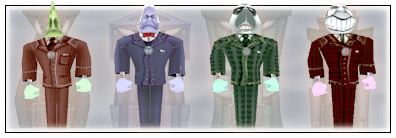

|
|  |
| By now you know the Cogs are nasty, menacing robots; and you also know how to bust them up with a few good gags. This section is sort of a Cog-spotter’s guide: a little inside information to help you find the Cogs you need to complete even the toughest of ToonTasks. |
|
Any Toon will tell you, there’s nothing better than unleashing a good gag on an unsuspecting Cog, but don’t forget - you won’t get any points for using a big gag on a little Cog. Read the section on Skill Points in section four if you need to refresh your memory. |
|
Toon Tip:
The two top level Cogs of each type are only found in buildings. |
|
Bossbots are most easily tracked down on Barnacle Boulevard in Donald’s Dock and Walrus Way in the Brrrgh.
|

|